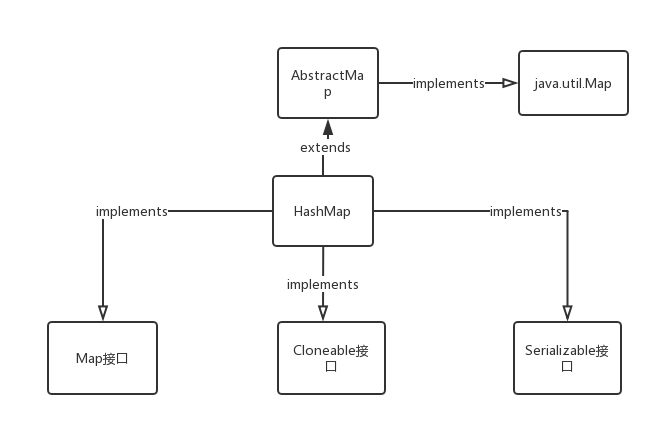

【Java】HashMap JDK1.8 源码
继承关系

数据结构
HashMap 1.8在1.7的基础之上增加了红黑树，所以数据结构为：数组 + 链表 + 红黑树
链表结点:
static class Node<K,V> implements Map.Entry<K,V> {
final int hash;
final K key;
V value;
Node<K,V> next;
}
红黑树结点：
static final class TreeNode<K,V> extends LinkedHashMap.Entry<K,V> {
TreeNode<K,V> parent; // red-black tree links
TreeNode<K,V> left;
TreeNode<K,V> right;
TreeNode<K,V> prev; // needed to unlink next upon deletion
boolean red;
}
简单的说，HashMap 是以 key-value 的形式储存数据，当加入新的数据时，利用 key 计算出该结点的下标（数组），把结点插入该位置上的链表，当链表达到一定大小，这时候可能影响查询效率，所以将链表转化为树。
HashMap 成员变量：
//默认数组长度
static final int DEFAULT_INITIAL_CAPACITY = 1 << 4; // aka 16
/默认/数组最大长度
static final int MAXIMUM_CAPACITY = 1 << 30;
//默认负载因子
static final float DEFAULT_LOAD_FACTOR = 0.75f;
//默认链表->红黑树的阈值
static final int TREEIFY_THRESHOLD = 8;
//默认红黑树->链表的阈值
static final int UNTREEIFY_THRESHOLD = 6;
//默认/链表->红黑树的最小容量（针对数组）
static final int MIN_TREEIFY_CAPACITY = 64;
//所有的键值对个数
transient int size;
//修改次数
transient int modCount;
//调整数组大小的阈值， = loadfactor * length
int threshold;
//加载因子
final float loadFactor;
*ps：TREEIFY_THRESHOLD 和 MIN_TREEIFY_CAPACITY 有什么不同？
TREEIFY_THRESHOLD表示当链表长度大于这个值时执行树化函数，但是要不要树化还要看数组长度是否大于 MIN_TREEIFY_CAPACITY，不大于将不进行树化，只是对数组进行扩容。也就是说当链表长度大于 TREEIFY_THRESHOLD 并且 数组长度大于 MIN_TREEIFY_CAPACITY 时才会进行树化操作。*
方法的实现
四个方法：
- hash()
- put()
- resize()
- get()
hash()
在对数组进行 put() 和 get()之前，都会先使用hash()函数对 key 进行计算，得到 key 的 hash 值，再用 hash & 数组length-1 得出该结点所在的数组的下标。
static final int hash(Object key) {
int h;
return (key == null) ? 0 : (h = key.hashCode()) ^ (h >>> 16);
}
可以看出，HashMap 中是可以有 key 为 null 的结点的，并且它处于数组下标为 0 的位置。当 key 不为空时，计算出 key 的 hashCode，然后用 hashCode 和 hashCode >>> 16 （即高 16 位和低 16 位进行异或）为进行异或计算出 hash 值。
PS：为什么要用 hashCode ^ (hashCode >>> 16)？
为了让 hashCode 的高位和低位都参与到数组下标的计算中来，使得计算出的下标更加均匀，从而减少冲突（避免链表过长）。
数组下标的计算是这样的：
index = hash & (length - 1);
hash 是个 32 位的二进制数，所以当 length 比较小（数组长度小）时，比如初始长度 16，则 length - 1 的二进制数为 1111，所以整个 32 位的 hash 值只有最后面的 4 位数参与了下标的计算， 这将会导致更多的冲突产生，所以在进行下标计算之前，先使用 hash ^ (hash >>> 16)，让 hash 值的高 16 位和低 16 位进行异或，使得 hash 值本身随机性就比较大，从而减少了冲突的产生。
++：JDK 源码中 HashMap 的 hash 方法原理是什么？ - 胖胖的回答 - 知乎
put()
public V put(K key, V value) {
return putVal(hash(key), key, value, false, true);
}
final V putVal(int hash, K key, V value, boolean onlyIfAbsent,
boolean evict) {
Node<K,V>[] tab; Node<K,V> p; int n, i;
//数组为空先进行扩容
if ((tab = table) == null || (n = tab.length) == 0)
n = (tab = resize()).length;
//该插入的数组位置为null，直接放入
if ((p = tab[i = (n - 1) & hash]) == null)
tab[i] = newNode(hash, key, value, null);
//否则对链表或红黑色进行插入
else {
Node<K,V> e; K k;
//该插入的数组位置不空，替换
if (p.hash == hash &&
((k = p.key) == key || (key != null && key.equals(k))))
e = p;
//否则，插入到红黑树中
else if (p instanceof TreeNode)
e = ((TreeNode<K,V>)p).putTreeVal(this, tab, hash, key, value);
//插入链表中
else {
for (int binCount = 0; ; ++binCount) {
//链表中不存在该相同的 key，生成新结点插入尾部
if ((e = p.next) == null) {
p.next = newNode(hash, key, value, null);
//链表结点数达到默认阈值8，执行扩容函数
if (binCount >= TREEIFY_THRESHOLD - 1) // -1 for 1st
treeifyBin(tab, hash);
break;
}
//该链表中存在相同的 key，break
if (e.hash == hash &&
((k = e.key) == key || (key != null && key.equals(k))))
break;
p = e;
}
}
//存在key相同的旧结点
if (e != null) { // existing mapping for key
V oldValue = e.value;
if (!onlyIfAbsent || oldValue == null)
e.value = value;
//访问结点之后，LinkedHashMap中会重写来达到重排序的目的
afterNodeAccess(e);
return oldValue;
}
}
++modCount;
//结点总是大于阈值，扩容
if (++size > threshold)
resize();
//插入结点之后，LinkedHashMap中会重写来达到重排序的目的
afterNodeInsertion(evict);
return null;
}
执行过程：
- 数组为空先进行扩容
- 通过 key 的 hash 值计算出数组下标，数组中改位置为空，直接插入
- 否则，如果数组中该下标位置是红黑树，将结点插入到红黑树中
- 如果数组中该下标位置是链表，进行链表的插入，如果链表长度大于阈值，则进行树化
- 判断总结点数是否已经大于阈值，大于则扩容
上述在执行树化函数的时候，还会判断数组的长度是否大于MIN_TREEIFY_CAPACITY 所设的阈值，如果不大于会进行数组的扩容而不是树化。所以说树化的条件有两个：
- 链表长度大于 TREEIFY_THRESHOLD（默认8）
- 数组长度大于 MIN_TREEIFY_CAPACITY（默认64）
final void treeifyBin(Node<K,V>[] tab, int hash) { int n, index; Node<K,V> e; if (tab == null || (n = tab.length) < MIN_TREEIFY_CAPACITY) resize(); else if ((e = tab[index = (n - 1) & hash]) != null) { //树化 } }resize()
对上面的代码提出两个：final Node<K,V>[] resize() { Node<K,V>[] oldTab = table; int oldCap = (oldTab == null) ? 0 : oldTab.length; int oldThr = threshold; int newCap, newThr = 0; if (oldCap > 0) { //数组的最大长度不超过 1<<30 if (oldCap >= MAXIMUM_CAPACITY) { threshold = Integer.MAX_VALUE; return oldTab; } //新容量 = 旧容量 * 2 else if ((newCap = oldCap << 1) < MAXIMUM_CAPACITY && oldCap >= DEFAULT_INITIAL_CAPACITY) newThr = oldThr << 1; // double threshold } else if (oldThr > 0) // initial capacity was placed in threshold newCap = oldThr; else { // zero initial threshold signifies using defaults newCap = DEFAULT_INITIAL_CAPACITY; newThr = (int)(DEFAULT_LOAD_FACTOR * DEFAULT_INITIAL_CAPACITY); } if (newThr == 0) { float ft = (float)newCap * loadFactor; newThr = (newCap < MAXIMUM_CAPACITY && ft < (float)MAXIMUM_CAPACITY ? (int)ft : Integer.MAX_VALUE); } threshold = newThr; @SuppressWarnings({"rawtypes","unchecked"}) Node<K,V>[] newTab = (Node<K,V>[])new Node[newCap]; table = newTab; if (oldTab != null) { //重新计算所有的结点的位置 for (int j = 0; j < oldCap; ++j) { Node<K,V> e; if ((e = oldTab[j]) != null) { oldTab[j] = null; //只有一个结点的位置 if (e.next == null) newTab[e.hash & (newCap - 1)] = e; //树结点的计算 else if (e instanceof TreeNode) ((TreeNode<K,V>)e).split(this, newTab, j, oldCap); //链表结点的计算 else { // preserve order //lo...是重新计算过后还在原哈希桶的所有结点所连成的链表 Node<K,V> loHead = null, loTail = null; //hi...为重新计算过后在新哈希桶的所有结点所连成的链表 Node<K,V> hiHead = null, hiTail = null; Node<K,V> next; do { next = e.next; //把还在原来位置的结点连接成新链表 //oldCap = 1000...，可验证和 1000... 的 1 相与的数是 0 还是 1 if ((e.hash & oldCap) == 0) { if (loTail == null) loHead = e; else loTail.next = e; loTail = e; } //把不在原来位置的结点连接成新链表 else { if (hiTail == null) hiHead = e; else hiTail.next = e; hiTail = e; } } while ((e = next) != null); //放在原哈希桶位置 if (loTail != null) { loTail.next = null; newTab[j] = loHead; } //放在新的哈希桶位置，原位置 + 旧数组长度 if (hiTail != null) { hiTail.next = null; newTab[j + oldCap] = hiHead; } } } } } return newTab; } - 为什么数组扩容后的大小都是 2 的整数幂？或者说为什么都是 * 2？
- 为什么重新计算过后位置有变化的链表是放在 原位置+旧数组length
的位置？
为什么数组扩容后的大小都是 2 的整数幂？或者说为什么都是 * 2？
在使用 key 的 hash 值计算数组 index 的时候，使用的代码是hash & length-1，为什么不是 length 而是 length - 1？因为数组的length总是 2 的整数次幂，而 2^n - 1 的二进制数总是 1111…，x & 1111...的结果都取决于 x 本身，假设使用的是 length，length = 1000…，那么x & 1000...的结果只有和 1 匹配的哪一位数决定，这将导致更多的冲突产生，结点分布不均匀，影响性能。为什么重新计算过后位置有变化的链表是放在 原位置+旧数组length
的位置？
因为数组扩容 length << 1 之后，length 二进制数的最高位的 1 向左移动了一位（比如 1000 变成了 10000），这使得 length - 1 的最高位也多了个 1（111 变成了 1111）， 所以在进行下标运算hash & length - 1时，只会产生两个结果：不变 或者 原位置+旧数组length，这取决于和 length 最高位相与的 hash 值得二进制数。比如：
get()
final Node<K,V> getNode(int hash, Object key) {
Node<K,V>[] tab; Node<K,V> first, e; int n; K k;
if ((tab = table) != null && (n = tab.length) > 0 &&
(first = tab[(n - 1) & hash]) != null) {
//hash桶的第一个结点是不是该结点
if (first.hash == hash && // always check first node
((k = first.key) == key || (key != null && key.equals(k))))
return first;
if ((e = first.next) != null) {
//从红黑树中查找
if (first instanceof TreeNode)
return ((TreeNode<K,V>)first).getTreeNode(hash, key);
//从链表中查找
do {
if (e.hash == hash &&
((k = e.key) == key || (key != null && key.equals(k))))
return e;
} while ((e = e.next) != null);
}
}
return null;
}